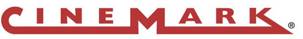
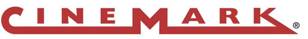
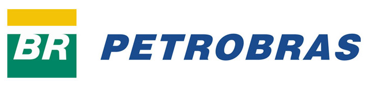
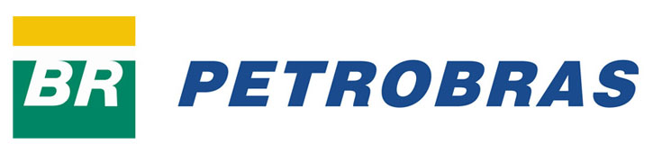
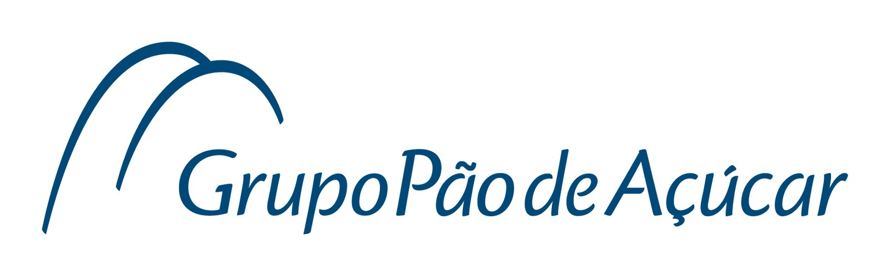
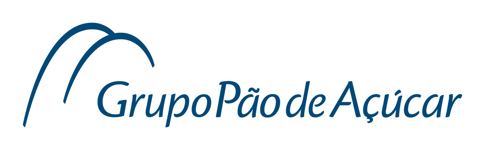

A Ponto de Referência
Por que a gente existe?
Na verdade, é um diálogo a 3.
- 1 Agente de Atendimento
- 2 Líder. Pessoa que cuida dele.
- 3 A pessoa de quem ele cuida. O Cliente.
E para que você tenha um Atendimento nota 1000, tem que cuidar desses 3 diálogos. De todos que constroem a marca até quem está em contato com o Cliente.
Ativar esse diálogo é um movimento. O movimento GAS.
É a construção de uma cultura de Atendimento e Serviços e a implementação de uma Gestão de Atendimento e Serviços.
Os líderes fazem a Gestão de Atendimento e Serviços, e os agentes de atendimento praticam o Gostar de Atender e Servir.
O que a gente faz?
Há 511 anos 150 milhões de brasileiros reclamam e chiam do atendimento no Brasil. A gente não. Ajudamos a construir uma cultura de Atendimento para transformar sua companhia na melhor do mercado. Atendimento é o único diferencial inimitável que uma companhia consegue ter.
Por que não se acha atendimento bom em qualquer canto?
Quase todo mundo acha que o atendimento acontece por acaso, sem esforço ou acha que atendimento é "culpa" de quem está na ponta.
Atendimento deve ser planejado, aprendido e praticado por todos que fazem parte da companhia, da sua comunidade de servir, da marca.
É isso que a gente faz. Ajuda sua marca a construir cultura e gestão de atendimento e serviços.
O que sua marca ganha com isso?
Marcas com GAS dão muito lucro. Sabem que gente é o fator mais importante de sucesso e não é da boca pra fora. Trabalham a Ecologia Empresarial, garantindo um clima na comunidade de servir em que gente, ajuda gente, que ajuda o Cliente. Fazendo a coisa mais rara em qualquer marca: AIDDU. Atitude Incrivelmente Diferente do Usual que gera Atendimento Incrivelmente Diferente do Usual.
A Comunidade de Servir integrada fazendo AIDDU constrói os 3R`s de sucesso. Quem tem os 3R`s de sucesso tem dinheiro no bolso sempre. Quer ver?
Para uma marca ter reputação ela tem que ser: rara, valiosa, organizada e inimitável. Se ela tem uma reputação maravilhosa, além do Cliente pagar mais, ele volta pra comprar, prefere, elogia e recomenda. Relacionamento da melhor espécie, é o próximo R. E quando o Cliente doa o seu relacionamento para a marca, ele vai gerar resultado. Para sempre.
Então, temos os 3R`s e resultado ao cubo. Com os 3R`s o Cliente gosta, gasta e quer ser reconhecido.
Como a gente faz?
1 - Ouvir a voz da comunidade de servir
É um diagnóstico para entender o relacionamento com o Cliente e as relações intra e inter-áreas.
É feito assim:
Termômetro Presencial - Entrevistas: Ouvir o pessoal da comunidade de servir para entender a cultura da empresa, vocação de atendimento e percepções que ajudem no desenvolvimento do projeto.
2 - Definir a cultura e construir a causa de atender e servir
Primeiro, definir em conjunto os degraus de evolução da companhia através da construção da nova arquitetura estratégica de atendimento e da causa que vão motivar a todos a implantarem e se voluntariarem pelo projeto.
O projeto é feito através de uma oficina para desenhar a nova cultura de atendimento e reprogramar a atitude da companhia, criando pré-pactos de entrega para garantir que a implantação da nova cultura aconteça também na ponta.
3 - [Re] pactuar a atitude e as relações
Agora é a hora de [Re]pactuar. Criar PACTOs (Pensar e Agir Coletivamente Transformando a Organização) para estimular a integração e o comprometimento entre as áreas.
Feito através de workshops para construir a acreditação de processos inter e intra-área e elaboração de planos de ação para melhor integrar e entregar. Elaboração de mapa de relacionamento com base nas ações a serem implementadas. [Re]pactuar todo o processo de atendimento inter-áreas que garanta o cumprimento de todas as promessas para o Cliente(interno e externo). E, por último, a implantação do sistema PACTOS para monitoração dos novos acordos.
4 - Convidar e ativar a comunidade de servir
Preparação de toda a empresa para o projeto, e determinação das metas que queremos atingir no nosso atendimento.
"Convite a participar" para todos e cada um na concretização dos objetivos deste projeto.
Feito através de palestras para: Compartilhamento e engajamento de todo mundo da estrutura para fazer com que a essência de atendimento da sua Marca seja entendida e seja propriedade de todos, mostrando a responsabilidade de cada um para que as mudanças realmente aconteçam.
5 - Ciclo de aprendizagem e inovação estratégica de atendimento
Consiste no aprofundamento dos temas ligados diretamente a construção de atendimento, serviço e operação. Abordaremos conceitos e ferramentas para compartilhar a nova cultura de atendimento.
É feito através de um ciclo de reuniões onde provocaremos os participantes a [re]pensarem sobre o modelo de serviços da sua marca, o que contribui e o que atrapalha no fortalecimento dessa cultura, em todas as áreas.
Nivelar e elevar o patamar de conhecimento e desenvolvimento de todos, capacitar os líderes a repassarem os conceitos e ferramentas para suas equipes, construir movimentos de mudança que levarão cada área a cumprir a promessa de atendimentos e serviços que a causa projetou.
6 - Sistematizar e [Re]aprender
Toda a implantação das ações da cultura e do aprendizado dos módulos de capacitação será consolidada através do Sistema GAS.
O Sistema é focado em patrocinar e gerir as ações que se pretende que ocorram nos pontos de contato com o Cliente, no nível definido nas fases iniciais do projeto.
Ele ajuda a capacitar on the job, controlar as implantações de novos procedimentos, implantação de novos conceitos, produtos e inovações.
O sistema funciona como e-learning e controle de implantação. Ele é on-line, sem nenhuma necessidade de instalação de software, não ocupa espaço no computador local.
7 - Monitorar Indicadores
Essa fase irá ajudar a eliminar a distância entre conceitos e resultados. Acompanharemos os participantes do projeto no seu dia a dia de trabalho pra medir a evolução de cada um, orientar na implementação das ferramentas e tirar possíveis dúvidas.
Depois do Movimento GAS...
Marcas com GAS conseguem:
Garantir que a marca entregue a promessa que ele representa. Em cada e todos os momentos. Ser tão competente para que o Cliente prefira seus produtos e serviços. E ache que vale a pena pagar mais do que ele paga para a concorrência sempre! Vale para os donos, vale para as equipes, vale para as comunidades de servir.
O movimento GAS vai levar a ação da sua marca a um patamar de Atendimento nunca antes imaginado. Afinal, todo mundo quer melhorar o valor da ação da sua marca.
Ação, contrat[ação], form[ação], inform[ação], integr[ação], propag[ação], reput[ação], inspir[ação] e pir[ação]. Para gerar transform[ação] e inov[ação].
A gente aprendeu que atender e servir transforma e inova ao mesmo tempo. E a gestão de cultura de atendimento e serviços precisa se propagar. Mas propagar sem competência? Não. Então, propagação com reputação e colaboração do presidente até o atendente, passando por toda comunidade de servir.
Aí todos fazem o que é bom para a marca sem ninguém ter que ficar olhando ou mandando. Sonho? Nada! O Movimento GAS faz isso. Tudo começa pelo líder que inspira.
Equipe
São mais 40 profissionais por todo Brasil, com muita experiência em varejo e serviços. Gente generosa, entusiasmada e com muita pegada!


 Este é um modelo exclusivo, com conteúdo inovador e customizado para a sua empresa. A nossa equipe - do tamanho do seu negócio - te ajuda a implementar o Movimento GAS. Acompanha e desenha junto contigo o projeto que construirá Atitude e Atendimento Incrivelmente Diferente do Usual em toda a comunidade de servir. Sua marca a partir do Movimento GAS, adquire Cultura e implementa Gestão de Atendimento e Serviços. E todos passam a Gostar de Atender e Servir.
Este é um modelo exclusivo, com conteúdo inovador e customizado para a sua empresa. A nossa equipe - do tamanho do seu negócio - te ajuda a implementar o Movimento GAS. Acompanha e desenha junto contigo o projeto que construirá Atitude e Atendimento Incrivelmente Diferente do Usual em toda a comunidade de servir. Sua marca a partir do Movimento GAS, adquire Cultura e implementa Gestão de Atendimento e Serviços. E todos passam a Gostar de Atender e Servir. Implantamos um processo de educação da sua comunidade de servir que capacitará todos para AIDDU - Atitude e Atendimento Incrivelmente Diferentes do Usual. Ao investir na educação do seu canal de distribuição, sua marca ganhará mais torcida a favor do canal. O canal vai passar a comprar mais o seu poduto, dar privilégios no ponto de vendas e na priorização da venda.
Implantamos um processo de educação da sua comunidade de servir que capacitará todos para AIDDU - Atitude e Atendimento Incrivelmente Diferentes do Usual. Ao investir na educação do seu canal de distribuição, sua marca ganhará mais torcida a favor do canal. O canal vai passar a comprar mais o seu poduto, dar privilégios no ponto de vendas e na priorização da venda. Nosso treinamento com foco em Atendimento que fala de todos os pontos importantes para incrementar os resultados em vendas. Com o programa COFFEE, você inicia e estreita o relacionamento com seus Clientes. E tudo começa com um bom bate papo, como quando somos convidados para tomar um café
Nosso treinamento com foco em Atendimento que fala de todos os pontos importantes para incrementar os resultados em vendas. Com o programa COFFEE, você inicia e estreita o relacionamento com seus Clientes. E tudo começa com um bom bate papo, como quando somos convidados para tomar um café


 


 


 
